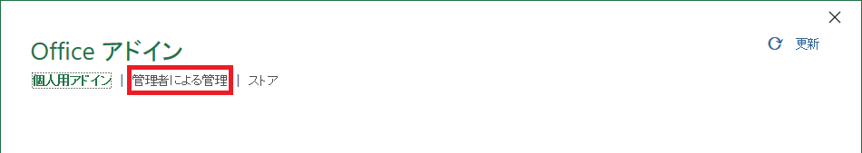
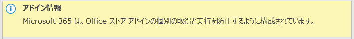
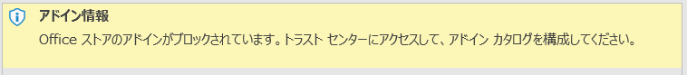
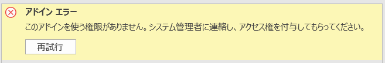

こんにちは、Office サポート チームです。
以前の Microsoft 365 Apps では、Office ストアから入手した Web アドインの情報が埋め込まれた Office ファイルを、ストアの利用が禁止されているユーザー環境で開くと、該当の Web アドインが一元展開から配信されていたとしてもアドインが利用できませんでした。Microsoft 365 Apps でこの動作が改善され、このようなシナリオでも利用が可能となりましたので、本記事では、この改善の詳細について説明します。
【前提】
本記事に記載の “一元展開” とは、Microsoft 365 管理センター より実施可能な設定で以下公開情報に掲載されています。
タイトル : アドインの一元展開が組織で機能するかどうかを確認する
アドレス : https://docs.microsoft.com/ja-jp/microsoft-365/admin/manage/centralized-deployment-of-add-ins
タイトル : Microsoft 365 管理センターにアドインをデプロイする
アドレス : https://docs.microsoft.com/ja-jp/microsoft-365/admin/manage/manage-deployment-of-add-ins
上記に従って一元展開をすると以下のように [Office アドイン] 画面の [管理者による管理] タブから指定したアドインを利用できるようになります。

特定の Web アドインのみの利用を許可したいテナントで、一元展開を活用して利用するアドインのみを展開し、Office ストアの利用を禁止する以下の 1) 2) のいずれかの設定も併せて適用するという利用方法が多く採用されています。
1) Microsoft 365 管理センターでストアを禁止する設定
Microsoft 365 管理センターにおいてストアを禁止する手順は以下となります。 後述する 2) の場合は、デスクトップ アプリケーションのみが対象となりますが、本設定は Office for the Web (Web 版 Office) も対象となります。
<設定手順>
- Microsoft 365 管理センター へグローバル管理者などでサインインします。
- [設定] - [組織設定] をクリックします。
- [組織設定] 画面 - [サービス] タブ に表示されている [ユーザーが所有するアプリとサービス] をクリックします。
- 表示された設定で [ユーザーが Office Store にアクセスすることを許可する] のチェックを外し、[保存] をクリックします。
なお、本設定を適用すると、[Office アドイン] 画面の [ストア] タブに Office ストアが利用できない旨のメッセージが表示され、ストアが利用禁止になります。
2) ポリシーでストアを禁止する設定
Office 管理用テンプレートのグループ ポリシーなどを利用し以下を設定すると [Office アドイン] 画面の [ストア] タブが非表示になり、ストアから入手した Web アドインが利用できなくなります。
<グループ ポリシー設定>
[ユーザーの構成] - [ポリシー] - [管理用テンプレート]
- [Microsoft Office 2016] - [アプリケーション設定] -[セキュリティ] - [セキュリティ センター]
- [Office ストアのブロック] : 有効
なお、上記ポリシーは Office デスクトップ アプリケーションの [トラスト センターの設定] - [信頼できるアドイン カタログ] - [Office ストアの Web アドインの起動を許可しない。] の強制的にチェック有りにし、変更不可とする設定となります。
【改善内容】
上記【前提】のように、ストアを利用禁止して一元展開で一部アドインを展開している環境において、以前は ストアから入手したアドインを利用している Office ファイルを開いた場合、表示されたアドインには、以下のような画面が表示され、アドインを利用することができませんでした。


これは、Office ファイルの作成時にどこからアドインが挿入されたがファイル内に記録されているためです。従来は、同じアドインが一元展開で利用できる状況でも、ストアから挿入したアドインとして記録されている場合は、一元展開のアドインが使われることはありませんでした。
実運用で特にこの状況に直面する例として、Power Apps や Power BI、Dynamics のサイトから Office ファイルにデータを埋め込んで出力するシナリオの報告を多く頂いていました。これらのシナリオでは、ストア アドインの情報がファイルに埋め込まれます。
<Power Apps>
タイトル : テーブル データを Excel で開く
アドレス : https://docs.microsoft.com/ja-jp/powerapps/maker/data-platform/data-platform-excel-addin
該当箇所 : テーブル データを Excel で開く
<Power BI>
タイトル : PowerPoint にライブ Power BI レポート ページを追加する
アドレス : https://docs.microsoft.com/ja-jp/power-bi/collaborate-share/service-power-bi-powerpoint-add-in-install?tabs=export
該当箇所 : “[エクスポート] オプションを使用する” に関する記述
<Dynamics 365>
- Excel
タイトル : Excel 用 Microsoft Dynamics AX アドインの使用について
アドレス : https://docs.microsoft.com/ja-jp/dynamicsax-2012/appuser-itpro/about-using-the-microsoft-dynamics-ax-add-in-for-excel
- Word
タイトル : Word 用 Microsoft Dynamics AX アドインの使用について
アドレス : https://docs.microsoft.com/ja-jp/dynamicsax-2012/appuser-itpro/about-using-the-microsoft-dynamics-ax-add-in-for-word
※ Dynamics については、設定次第で一元展開したアドインを利用する設定も可能ですが、既定ではストア アドインを利用します。
本記事の改善によって、ファイルにストアからダウンロードしたアドインの情報が記録されていたとしても、一元展開で同じアドインを展開していれば、上記画面が表示されることなく、自動的に 一元展開されたアドインを利用することが可能になりました。
また同様に、従来はテナント A で一元展開されたアドインを用いて作成したファイルをテナント B で開いた場合も、テナント A の一元展開アドインの情報が記録されているため、以下画面が表示されて利用ができませんでした。

今回の改善は同じアドインであれば、展開方法に依存せず利用できるというものです。そのため、こちらのケースでも本改善によって自動的にストア アドインやテナント B の一元展開アドインを利用できます。
【利用可能な Office バージョン】
上記機能が利用可能な Office バージョンは、Microsoft 365 Apps の各更新チャネルにおいてそれぞれ以下が対象となります。
- Microsoft 365 Apps 最新チャネル - バージョン 2107 (ビルド 14228.20204) 及びそれ以降
- Microsoft 365 Apps 月次エンタープライズ チャネル - バージョン 2107 (ビルド 14228.20324) 及びそれ以降
- Microsoft 365 Apps 半期エンタープライズ チャネル - バージョン 2202 (ビルド 14931.20604) 及びそれ以降
今回の投稿は以上です。
本情報の内容（添付文書、リンク先などを含む）は、作成日時点でのものであり、予告なく変更される場合があります。